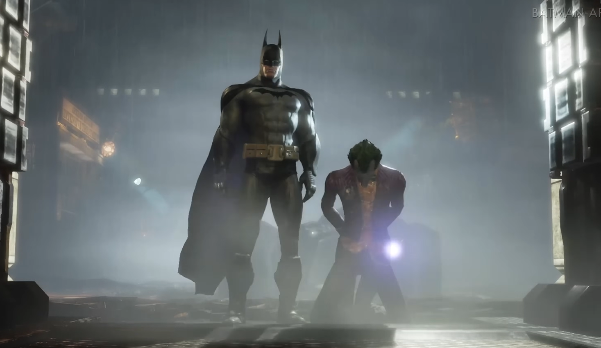
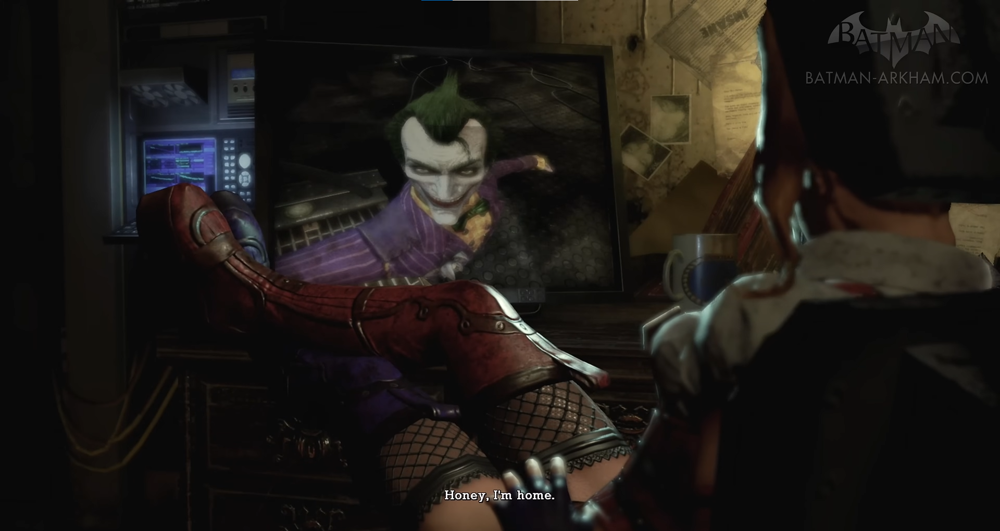
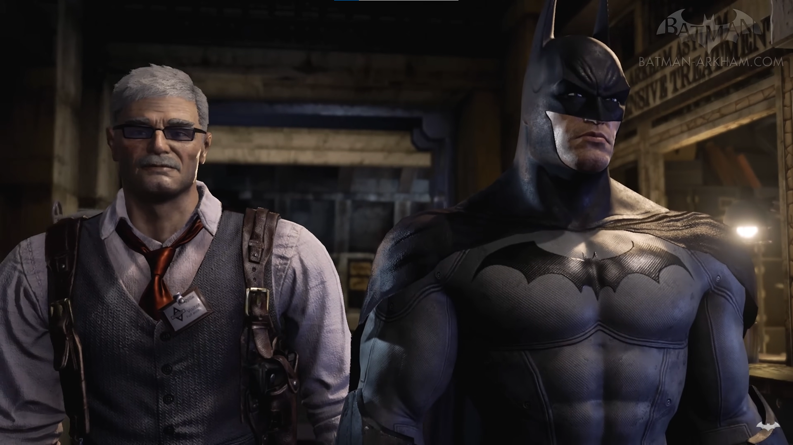
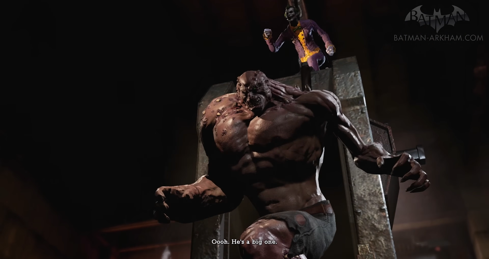
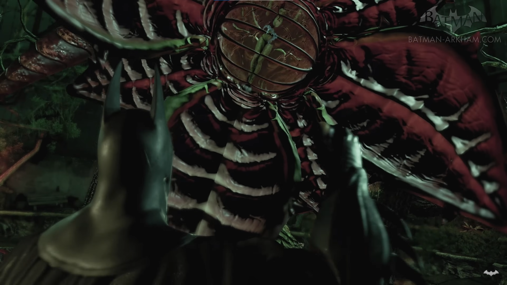
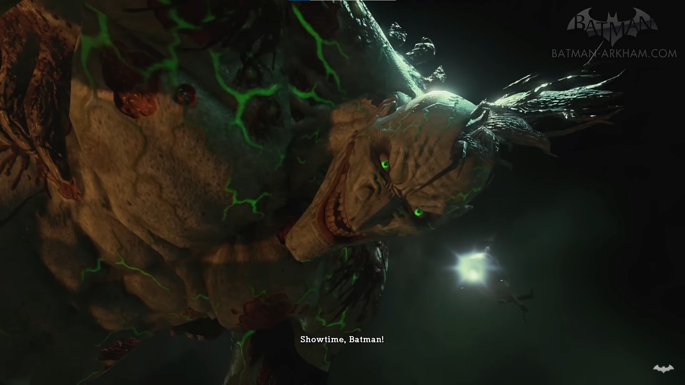
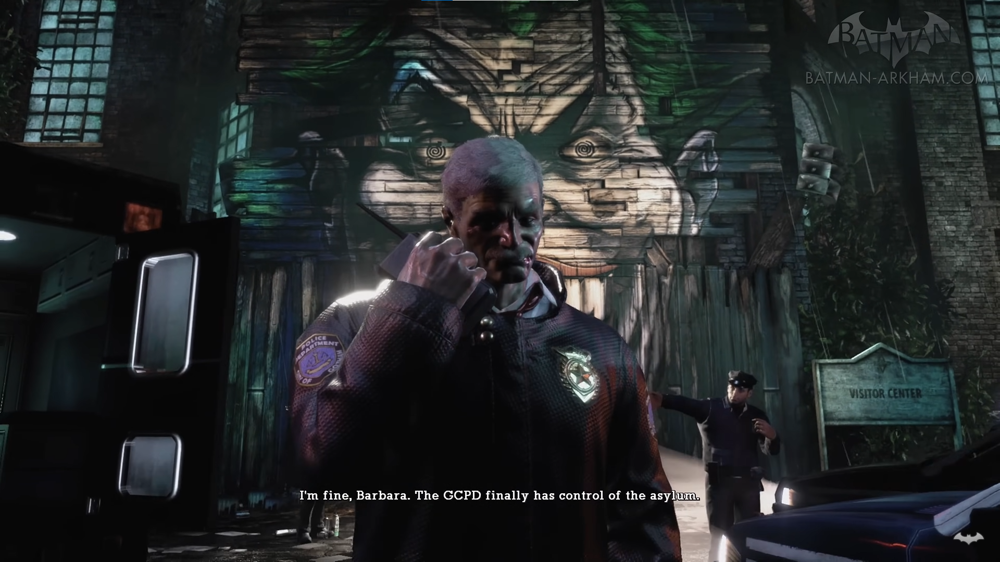
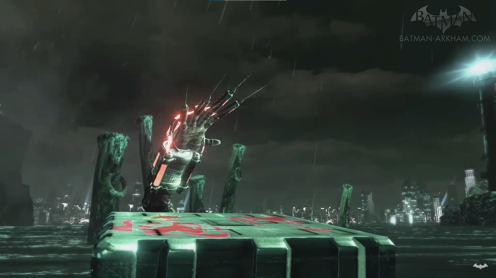
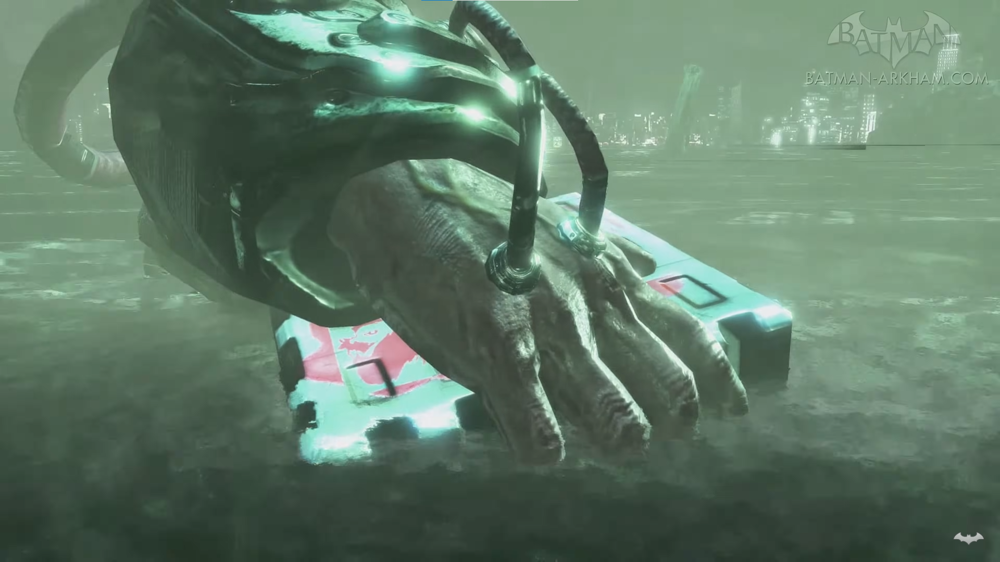
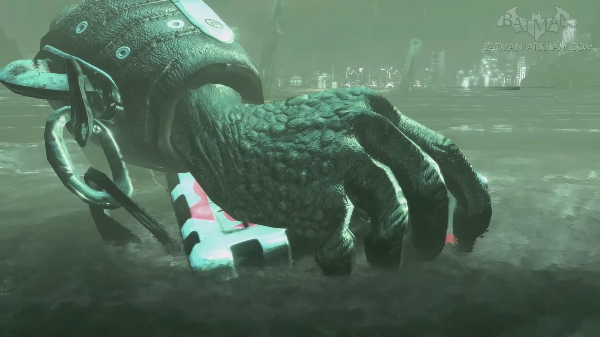

HISTÓRIA
O Coringa ataca o Gabinete do Prefeito de Gotham, porém é derrotado pelo Batman que o leva até o Asilo Arkham. Devido a um recente incêndio na Prisão de Blackgate, um grande número de prisioneiros em perfeitas condições mentais foi temporariamente relocado para Arkham, muitos dos quais estão na gangue do Coringa.


Enquanto Batman acompanha os guardas levando o Coringa para dentro, a segurança de Arkham é tomada pela Arlequina, permitindo que o Coringa escape e tome controle da instalação.Batman rapidamente percebe que esses eventos, incluindo o incêndio em Blackgate, são todos parte de um plano do Coringa, e que o Coringa subornou um guarda de segurança para deixá-lo escapar. O Coringa ameaça detonar várias bombas espalhadas por Gotham se alguém tentasse entrar em Arkham, forçando Batman a trabalhar sozinho; porém ele consegue contar com a colaboração do Comissário Gordon e outros guardas leais depois do Batman libertá-los. Além deles, o Oráculo consegue ajudá-lo a se guiar pela ilha com o rádio. Batman consegue ter acesso a uma Batcaverna adjunta que ele construiu anos antes.


Batman eventualmente descobre que o Coringa está procurando um composto químico chamado de Titan, que está sendo produzido no Asilo. O composto é baseado na droga Venom, que dá a Bane sua super força, entretanto a fórmula Titan é muito mais potente. O Coringa planeja usar a fórmula Titan em vários prisioneiros de Blackgate para criar um poderoso exército, junto com as plantas da Hera Venenosa, que sofrem mutações pela ilha. Ele também planeja despejar o produto extra da produção de Titan no suprimento de água de Gotham, que podem causar efeitos desastrosos na cidade.Batman, depois de derrotar vários de seus arqui-inimigos, volta para a Batcaverna e cria um antídoto para o Titan, porém ele tem tempo de sintetizar apenas uma dose antes das plantas Titan da Hera Venenosa destruírem seu computador.


Depois de derrotar as plantas mutantes e Hera, o Coringa convida Batman para sua "festa", onde Batman vê o Coringa segurando Scarface, sentado em um trono de manequins. O Coringa revela que ele capturou Gordon e tenta injetá-lo com o composto Titan através de um dardo. Batman pula na frente da linha de atiro e é atingido no lugar de Gordon. Ele tenta resistir a mutação, enfurecendo o Coringa até que ele atire um dardo Titan em si mesmo, se tornando um monstro enorme. Em sua nova forma, o Coringa se exibe com orgulho para os helicópteros de notícias.Ele tenta persuadir o Batman a não resistir a mutação e se tornar um monstro também. Batman recusa e injeta o antídoto nele mesmo. Maravilhado com a decisão dele, o Coringa ataca Batman diretamente e com seus capangas. No final, Batman consegue derrotá-lo cobrindo sua mão com gel explosivo e dando um grande soco do maxilar do Coringa. O Coringa volta ao seu estado original e é levado a sua cela, enquanto a polícia de Gotham retoma o controle da ilha.

Enquanto conversa com Gordon, Batman ouve um chamado no rádio da polícia dizendo que o Duas-Caras está roubando o Segundo Banco Nacional de Gotham, ele então aciona Bat-asa e voa de volta para Gotham. Depois dos créditos finais, uma caixa de metal com a palavra Titan é vista flutuando na água, e uma mão de um vilão, que puxa a caixa para debaixo da água, (Há três cenas diferentes, se o jogo for zerado no modo Easy, quem puxa a caixa é o Crocodilo, se for zerado no modo Médium, quem puxa é o Espantalho e se for zerado no modo Hard, quem puxa a caixa é o Bane). Este final serve como uma chamada para outro jogo, Batman: Arkham City.
FINAIS
ESPANTALHO

BANE

CROCODILO
